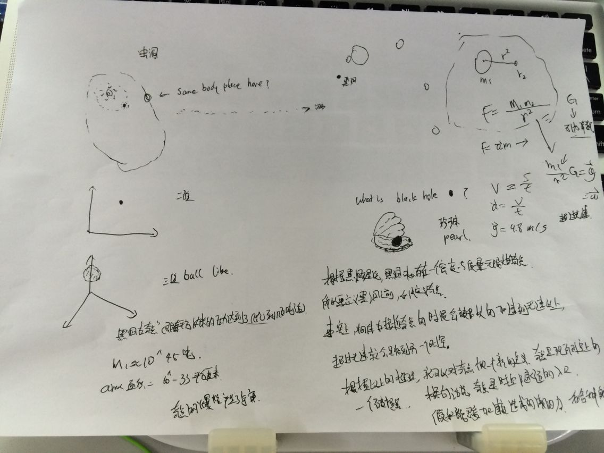

密码学发展史
Enigma的历史
一、诞生
直到第一次世界大战结束为止，所有密码都是使用手工来编码的。
直接了当地说，就是铅笔加纸的方式。在我国，邮电局电报编码和译
码直到很晚（大概是上个世纪八十年代初）还在使用这种手工方法。
手工编码的方式给使用密码的一方带来很多的不便。首先，这使得发
送信息的效率极其低下。明文（就是没有经过加密的原始文本）必须
由加密员人工一个一个字母地转换为密文。考虑到不能多次重复同一
种明文到密文的转换方式（这很容易使敌人猜出这种转换方式），和
民用的电报编码解码不同，加密人员并不能把转换方式牢记于心。
ppt下载 ：http://pan.baidu.com/s/1sj53HrJ
memcache 流量激增，抓包检测方式
1. 使用tcpflow抓包
tcpflow -c -p -i eth0 dst port 11211 and dst host 10.x.x.x|grep ‘x.x.x.x.11211:’ > a.txt
2. 跟进key的数量排序
awk -F ‘:’ ‘{print $2}’ a.txt|sort |uniq -c|sort -rn|head -n 10
3. grep key 看看流量来自那组服务器
tcpflow -c -p -i eth0 src port 11211 and src host 10.x.x.x|grep ’3478a3c3659f313e42d809d5′#火影忍者
要做文艺的程序员!
他们抛下我，或许是因为我们世界观不同。可我连世界都没观过，哪来的世界观？
于是我决定驱车上路，一路走来，那些天真和懵懂，早已被我抛在脑后。
我想和这个世界谈谈，于是，我拿起了笔，将过往的日子，一一写下。
这一刻，我回忆起那天被他们遗弃时的寒冷，便给自己取了个笔名，寒寒。
我跨过一座又一座城池，走过命运的三重门。我经历过告白与告别，也遭受过嘲笑与谩骂。
在驻足的瞬间，我终于领悟到，我只不过像你像他，像那野草野花。
所以我给女儿起名叫小野，我不奢求她大富大贵，
只希望她能平平安安脚踏实地，不要被一些拜金的世界观所左右。
经历了人生的大起大落，现在的我，终于踏上了一条平凡之路，与过去，后会无期。
团队内部讨论<<穿越星际>>
手稿，最后推算出：
黑洞的加速度是超光速，超过光速就能时间逆转，他们利用黑洞回到了过去，改变了历史！

Consistence Hash Ring Mysql For Mysql
Project place Here!
Consistence Hash Ring Mysql For Mysql , and it is client end implement, not proxy! why doesn't use proxy
optimise connection number， because not want reduce performance, join it!
How to Use, you can also bind django models:
#coding=utf-8
from consistent import MysqlHashClient
from settings import host_config
import time
import logging
class BaseLayout(object):
#mysql consistence ring static class object
client = MysqlHashClient(host_config)
#mysql table name must extend
TABLE_NAME = ""
def __init__(self, guid, value):
self.guid = guid
self.value = value
def set(self):
return self.client.set(key=self.guid,\
value=self.value, table_name=self.TABLE_NAME)
@classmethod
def delete(cls, guid):
return cls.client.delete(guid, table_name=cls.TABLE_NAME)
@classmethod
def get(cls, guid):
return cls.client.get(guid, table_name=cls.TABLE_NAME)
class UserHomeLayout(BaseLayout):
TABLE_NAME = "user_channel_layout"
def __init__(self, guid, value):
super(UserHomeLayout, self).__init__(guid, value)
if __name__ == "__main__":
now = time.time()
guid = "35aee8e85ffb518e70e44ee06bcc4479"
value = [1, 2, 3, 4]
user_layout = UserHomeLayout(guid, value)
print "initial use:", time.time() - now
now = time.time()
user_layout.set()
print "set use:", time.time() - now
print "result:", UserHomeLayout.get(guid)
now = time.time()
value = [1, 2, 3, 6]
user_layout = UserHomeLayout(guid, value)
user_layout.set()
print "set dup use:", time.time() - now
now = time.time()
print "result:", UserHomeLayout.get(guid)
print "get use:", time.time() - now
now = time.time()
UserHomeLayout.delete(guid)
print "del use:", time.time() - now
now = time.time()
print "result:", UserHomeLayout.get(guid)
print "get use:", time.time() - now
Mysql DB Config use settings.py ADD partitions!
host_config = {
"hosts": [{
'db': 'youku_mobile_user', # Or path to database file if using sqlite3.
'user': 'root', # Not used with sqlite3.
'passwd': '', # Not used with sqlite3.
'host': 'localhost', # Set to sempty string for localhost. Not used with sqlite3.
'port': 3306, # Set to empty string for default. Not used with sqlite3.
'init_command': 'SET storage_engine=INNODB;set SESSION TRANSACTION ISOLATION LEVEL READ COMMITTED; set
autocommit=0;set names "utf8";'
'partitions': [1, 2],
}]
}
双十一文房墨宝
by 妹子1
遥想去年双十一，提前一周就立贴发誓，如若败家，果断剁双手双脚废双膝，响当当滴工资保卫战就在众电商如黄河之水奔流不息的短信邮件轰炸下打响了。于是11.11当天只管埋土苦干，心无旁骛，堪称中国好员工！晚上回家断网关机洗洗碎，以为总算保住了腰包吧，万万没想到！！！所有活动12号同样有效，真是无商不奸呐，小的真心给跪了Orz，于是憋了一天的购物欲就在12号那天狂扫了所有购物车……
展望今年双十一，决定改变方针，简单来说就俩字：随心，更简洁点就是：怂。佛曰：“前世五百次的回眸，才换来今生的擦肩而过”。佛又曰：“万发缘生，皆系缘分”。总之，能放到购物车的，都是缘分呐，天意如此，逆天而为恐怕不太好吧。古人云：独乐乐不如众乐乐，私以为：独购购不如众购购，遂奉上一份2014双十一购物指南：http://www.zhihu.com/question/26156210（画外音：总有一款适合你~~），最后再良心推荐一款比价软件：惠惠购物助手，值得你拥有。
by 妹子2
时间是我们坐上的列车，过去的旅程便再也回不来。成长总是一瞬间的感悟，不觉已经迈入了人生的第25个年头，回首望一望，感觉近几年过得尤其快，仿佛19 岁那辆南下的列车，一直奔跑着将我带到了这里。
曾经见过一句幸福的话“你和阳光都在就是我想要的未来”，简短的字句一下子就抓住了我这颗小文艺的心。哲学家赫拉克利特说过“人不能两次踏入同一条河流”，可见万物都在变化，一如我们的心态。来到北京之后，忽然发现人们口口相传的雾霾绝对不是虚张声势，看得到夜里马路上的流光，却看不清等待公车的号码牌，看得见烟雾缭绕的仙境，却看不见清明如许的城市，看得清看不清也终于体会到了世界上最远的距离。经历了长久的雾霾天儿，对阳光的渴望也变得愈加强烈，于是“只要有阳光”便成了我想要的未来。
其实除去淡淡的自嘲意味，11月11日是个很好的日子。从数字形态上看，由四个1组成，代表了一种独立。从国家政事上看，APEC会议中的一天，国企壕友继续放假。从消费购物角度上看，电商大甩价剁手党的春天。从季节更替上看，秋末冬初，妈妈不用叮嘱，我们也都穿上了秋裤。从情感角度来看，是情侣们秀恩爱，光棍们自怨自艾的光棍节。从我的角度看，追逐阳光，岁月和稳，下一段年华。11.11，你好。
by 帅哥1
我的双十一 …回想当年！
遥想anzu当年，青春焕发，帅气逼人，双十一还不知为何物，道听其貌不扬的马云，便进入他的淘宝世界，恨魔兽，叹dato,
让我在虚拟的网络世界找到了伴我驰骋江湖的“紫霞仙子”，如同大圣娶亲，一发不可收拾....
可惜快乐永远是短暂的，换来的只是无尽的痛苦和长叹，为什么我们会“分开” ？
尼玛，支付宝透支了，女神的“新衣”呢？ 就在感情即将破裂的时刻，可以用一句峰回路转来形容，女神竟然说道：“帮主，支付宝账号给你吧....”，经各方打听，仙子真乃白富美也！
岁月如梭，流年已逝，无奈只能退出网络江湖...
风萧萧兮易水寒，壮士一去兮不复还，我已踏入燃烧的远征，人生跌宕起伏, SONY已逝，Moto已亡, 双十一依然一直伴随这我疯狂，我从未改变！
好吧，还是让我继续重复双十一的广告词吧，1111....上天猫....就购了…
by 帅哥2
我的双十一
两个黄鹂鸣翠柳，一行白鹭上青天。 窗含西岭千秋雪，门泊东吴万里船。用杜浦的绝句来形容如今的双十一在好不过了。
回想我年少无知，青春似水的孩时，临街家的小孩经常唇齿之戏于光棍节,
也嘲笑过邻居家未婚配的姐姐。时光飞梭，转眼间我已上了大学，也到了当年邻居家姐姐的年龄，每当光棍节来临之际，舍友们就争相脱单。而我，在一丝心酸中度过了时光般的单身节。毕业后多年，我已举案齐眉，莺歌燕舞，我们这一代人，成为了社会的栋梁，我以为。随后86，90后进入了我的生活，单身节早已不代表成双入对，百步穿杨，现在的大学生不在需要伴侣，更多的是把感情寄托到了舍友身上，如今流行的是，好基友一被子。他们也是一代人，一代国际化，开放自由的象征，就连审美和相貌也更接近国际化，老去的我们，带着一丝伤感，钻进了洪营的被窝，随后，前仆后继，深入浅出，风萧萧兮易水寒，壮士一去不复返。
开放和自由， 当我在北洋时就隐隐察觉，闷骚的我们，在当下的社会背景下残喘苟活，
当我三十而立，发现只有抱着开放自由的心，才能走到世界的前沿，我还记得当年淘宝卖安全设施销量的突飞猛进，还记得听说第一个同性恋APP时的惊讶和好奇，还记得，虚拟游戏中的明媒正娶。世界在变，我也在变，有时我也想找个宁静的马代，在海边开阔胸怀，放飞自由。
瓜熟蒂落，大势所趋，只有更开放自由的心态，才能给我们带来更多的创新和创意，同时，感谢陪伴在我左右的朋友们，你们的剑性在该领域之强，专业性之深，让人五体投地，含笑九泉。最后，请准许我用 文天祥的
自古人生谁无死，留取丹青照汗青来书写属于我们的史册，这就是我的双十一...
C Tornado like epoll event Server, Poject:
Here
Usage:
void process_request(int client, int epoll_fd) {
ssize_t count;
char buf[4096];
count = read_all(client, buf);
#ifdef DEBUG
printf("read all %s\n",buf);
#endif
echo(client, buf);
}
void echo(int client,char *buf){
char *char_quit = "quit";
int quit = strncmp(buf, char_quit , 4);
if(quit == 0){
buf = "quit!";
}
send_all(client , buf);
/* quit */
if(quit == 0){
close(client);
}
}